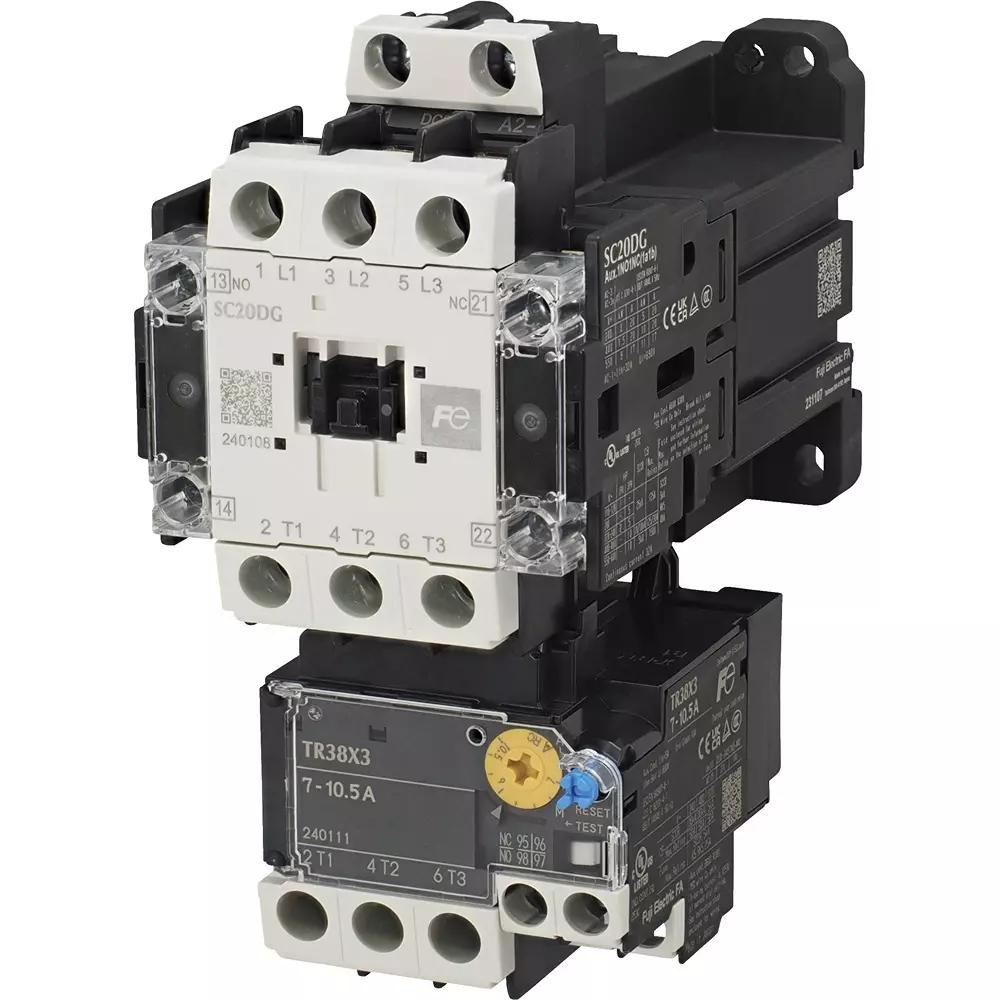
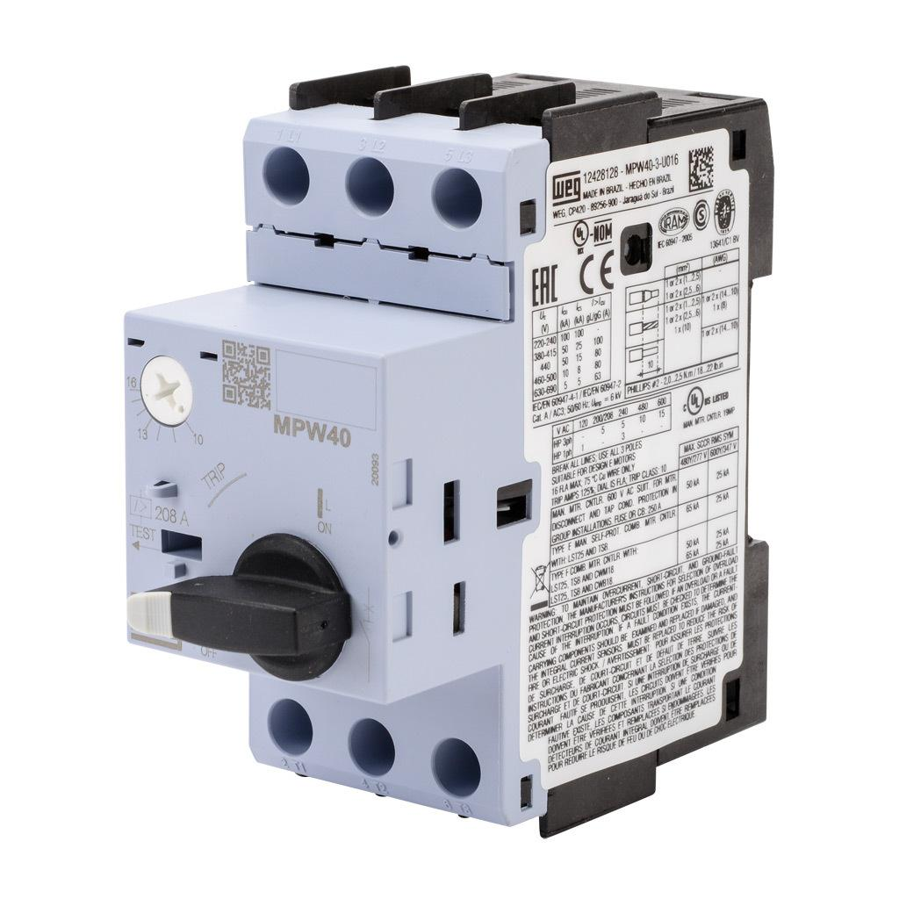
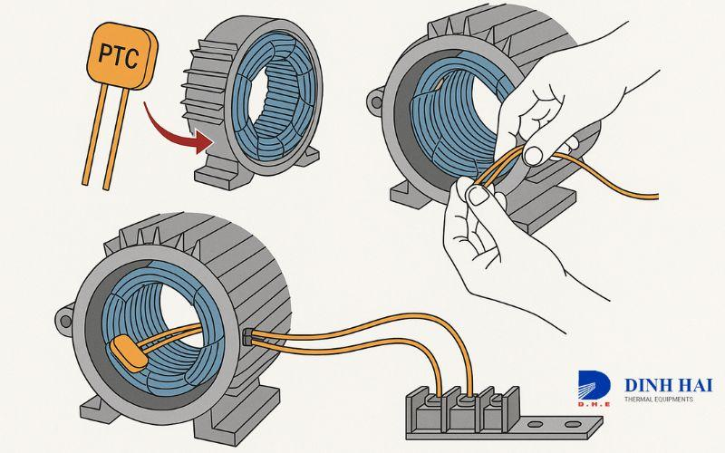

05_Overload_Protection - Overload & protection: Thermal relay, MPCB, PTC
1. Purpose of motor protection
Motor protection prevents or limits damage caused by abnormal electrical conditions, excessive heating, and certain mechanical operating problems.
An industrial motor can be damaged even when the supply voltage appears normal. Excessive load, phase loss, poor cooling, repeated starting, bearing failure, and incorrect protection settings can all cause overheating.
The three protection devices in this topic serve different purposes:
- Thermal overload relay: Detects sustained motor overload using a thermal model or heating element.
- MPCB (Motor Protection Circuit Breaker): Provides motor-circuit switching and protection functions, commonly including overload and short-circuit protection, depending on the device.
- PTC thermistor: A temperature-sensitive sensor embedded in or attached to the motor that detects temperature-related conditions.
These devices are not interchangeable. A PTC sensor measures temperature, while a thermal overload relay estimates heating from current. An MPCB combines protective functions according to its design and ratings.
2. What can damage an electric motor?
| Fault or condition | What happens | Possible consequence |
|---|---|---|
| Sustained overload | Motor current and winding heating increase | Insulation deterioration |
| Short circuit | Very high fault current flows | Severe thermal and electromagnetic damage |
| Phase loss | Motor operates with an abnormal phase condition | Increased current and overheating |
| Voltage imbalance | Unequal phase voltages create unequal currents | Additional winding heating |
| Locked rotor | Motor cannot accelerate or rotate | Very high current and rapid heating |
| Frequent starting | Repeated starting losses accumulate | Excessive winding temperature |
| Poor ventilation | Heat cannot dissipate adequately | Overtemperature |
| Bearing or mechanical failure | Friction and load increase | Overload and possible motor damage |
| Excessive ambient temperature | Less thermal margin remains | Premature thermal trips or insulation ageing |
| Incorrect motor protection settings | Protection may trip too early or too late | Nuisance trips or inadequate protection |
A motor's protection system must account for both electrical current and the thermal condition of the motor. Current alone does not tell the entire story.
3. Thermal overload relay

3.1 Definition
A thermal overload relay protects a motor against sustained overload conditions by responding to heating associated with motor current.
Traditional thermal relays commonly use bimetallic elements. Many modern electronic overload relays use current measurement and a thermal model instead.
The relay normally operates a trip contact in the motor starter's control circuit. That contact causes the contactor to de-energize, disconnecting the motor.
Important: An overload relay does not normally interrupt a high short-circuit current by itself. It must be coordinated with suitable short-circuit protection.
3.2 How a bimetallic thermal relay works
A traditional bimetallic relay uses strips made from two metals with different thermal expansion characteristics.
- Motor current passes through the relay's current-carrying elements.
- Current produces heat.
- The bimetallic elements heat and bend.
- Sustained excessive current causes sufficient movement to trip the mechanism.
- The relay changes its auxiliary-contact state.
- The contactor control circuit opens and the motor stops.
The relay's response depends on current magnitude, duration, ambient conditions, and its trip characteristics.
A moderate overload may take longer to trip than a severe overload. This helps accommodate normal motor starting while providing protection against sustained excessive current.
3.3 Typical terminals and functions
Thermal overload relays commonly provide auxiliary contacts such as:
| Terminal designation | Common function |
|---|---|
| 95-96 | Normally closed overload trip contact |
| 97-98 | Normally open signalling contact |
These terminal designations are common conventions, not a guarantee for every product. Verify the actual device diagram.
In a typical DOL control circuit, the normally closed overload contact is wired in series with the contactor coil. When the relay trips, the contact opens and de-energizes the contactor.
The normally open contact can be used to signal an overload trip to a PLC or indicator, subject to the device's contact ratings and circuit design.
4. Overload relay settings and trip class
4.1 Current setting
The overload relay's current setting must be selected according to the motor nameplate, relay arrangement, manufacturer instructions, and applicable standards.
For example, suppose a motor has a nameplate full-load current of 14 A and the overload relay is installed in the line circuit.
The initial setting reference is generally the motor's rated current, subject to the applicable design and protection requirements.
Do not increase the setting simply because the motor trips during startup. First determine whether the starting duration, load, supply, motor condition, or relay selection is responsible.
4.2 Trip class
Trip class describes the relay's response time under a defined overload test condition. Common classes include Class 10, Class 20, and Class 30, with the exact specifications defined by the relevant standard and device.
| Trip class | General characteristic | Selection consideration |
|---|---|---|
| Class 10 / 10A | Faster trip characteristic | Often suitable for motors with relatively short starting times |
| Class 20 | Longer trip characteristic than Class 10 | May suit motors that require longer acceleration |
| Class 30 | Longer trip characteristic | May be needed for certain high-inertia starting duties |
The correct class depends on the motor's permissible thermal limits, starting current, acceleration time, starting frequency, and manufacturer recommendations. A slower trip class is not automatically better.
4.3 Manual and automatic reset
- Manual reset: A person must reset the relay after the cause of the trip has been assessed.
- Automatic reset: The relay resets when its mechanism or thermal model permits, according to the device configuration.
Automatic reset can create an unexpected restart hazard if the control system allows the motor to restart as soon as the relay resets. Use a control design that prevents unintended restarting and complies with the machine's safety requirements.
5. MPCB: Motor Protection Circuit Breaker

5.1 Definition
An MPCB is a circuit breaker designed for motor-circuit applications. Depending on the model, it can provide:
- Manual switching and isolation functions within its specified use.
- Overload protection.
- Short-circuit protection.
- Phase-loss sensitivity or other motor-related protective functions.
- Fault indication.
An MPCB is often used with a contactor in a motor starter. Some motor-protection circuit breakers can be used for direct manual motor switching within their ratings and installation requirements.
5.2 How it protects the motor circuit
An MPCB commonly combines two protective mechanisms.
Thermal protection
Responds to sustained overload current using a thermal mechanism or an equivalent design.
Magnetic protection
Responds rapidly to high fault currents, such as short circuits, within the device's specified operating characteristics.
Some models also include additional phase-sensitive or electronic protection functions. The manufacturer's data sheet determines the actual capabilities.
5.3 Typical circuit arrangement
Three-phase supply
|
v
[MPCB]
|
v
[Contactor]
|
v
[Motor]
This is a common arrangement, not the only valid design. The need for separate overload protection, the permissible contactor arrangement, and short-circuit coordination depend on the exact components and applicable requirements.
5.4 MPCB versus ordinary MCB
| Characteristic | Ordinary MCB | MPCB |
|---|---|---|
| Main purpose | Protect electrical circuits against overcurrent | Protect and switch motor circuits |
| Motor overload adjustment | Usually not adjustable to the motor's full-load current | Commonly has an adjustable motor-current range |
| Short-circuit protection | Yes, according to its rating | Commonly provided, according to its rating |
| Motor-specific characteristics | Depends on breaker design and application | Designed specifically for motor-circuit applications |
| Typical use | Distribution and branch circuits | Motor feeders and motor starter assemblies |
An ordinary MCB should not be assumed to provide adequate motor overload protection merely because its current rating resembles the motor's rated current.
5.5 Selecting an MPCB
Check:
- Motor rated current and the MPCB's adjustment range.
- Rated operational voltage.
- Short-circuit breaking capacity at the installation point.
- Magnetic trip characteristics.
- Number of poles and wiring arrangement.
- Coordination with the contactor and other protective devices.
- Ambient temperature and enclosure conditions.
- Manufacturer's instructions and applicable standards.
A device's breaking capacity must be suitable for the prospective short-circuit current at the installation point. Matching the current dial alone is not enough.
6. PTC thermistor motor protection

6.1 Definition
A PTC (Positive Temperature Coefficient) thermistor is a temperature-sensitive resistor whose resistance increases sharply over a specified temperature range.
In motor protection, PTC sensors are commonly installed in or near the stator windings. They detect winding temperature more directly than a current-based overload relay.
The PTC sensor is normally connected to a compatible thermistor protection relay or monitoring input.
Key distinction: The PTC sensor measures temperature-related resistance. The protection relay interprets that resistance and initiates the required response.
6.2 How a PTC protection system works
- The motor operates and its winding temperature changes.
- The PTC sensor responds to the temperature at its installed location.
- As the sensor reaches its specified response region, its resistance rises sharply.
- The thermistor protection relay detects the resistance change.
- The relay changes its output contact state.
- The control circuit can stop the motor and signal a thermal fault.
The actual response depends on the sensor type, trip temperature, installation, and protection relay.
6.3 PTC sensor versus overload relay
A current-based overload relay estimates motor heating from current and a thermal model. A PTC sensor responds to the temperature at its location.
This distinction matters because a motor can overheat without an unusually high current. For example:
- Cooling fan failure.
- Blocked ventilation.
- High ambient temperature.
- Excessive starts within a short period.
- Operation at low speed with inadequate self-cooling.
- Certain internal winding hot spots.
A PTC sensor can help detect these conditions when the sensor placement and response characteristics are suitable.
However, a PTC sensor does not directly measure every part of the winding, bearings, or entire motor. Sensor coverage is limited by its design and location.
6.4 PTC wiring and protection relay
PTC sensor(s) in motor winding
|
| Sensor circuit
v
Thermistor protection relay
|
| Trip output contact
v
Contactor control / PLC input
|
v
Stop command and fault indication
The PTC circuit is typically a low-energy sensor circuit separate from the motor's power conductors.
Never connect a PTC sensor directly to a standard PLC input unless the input is specifically designed to accept the sensor's electrical characteristics. Use the specified thermistor relay or compatible monitoring interface.
6.5 PTC versus RTD
| Characteristic | PTC thermistor | RTD, such as Pt100 |
|---|---|---|
| Main purpose | Temperature-dependent resistance, often used for thermal trip detection | Temperature measurement |
| Resistance behavior | Often rises sharply near its specified response temperature | Changes more gradually and predictably with temperature |
| Typical output use | Trip or temperature threshold detection | Continuous temperature measurement through a compatible input |
| Interface | Compatible thermistor protection relay or input | RTD transmitter or compatible temperature input |
| Typical motor use | Winding overtemperature protection | Winding or bearing temperature monitoring, depending on design |
A PTC protection system is not generally a substitute for an RTD measurement system when continuous numerical temperature readings are required.
7. Thermal relay vs MPCB vs PTC
| Characteristic | Thermal overload relay | MPCB | PTC system |
|---|---|---|---|
| What it primarily detects | Current-related heating over time | Overload and high fault current, depending on model | Temperature at sensor location |
| Main purpose | Motor overload protection | Motor-circuit protection and switching | Thermal monitoring and overtemperature trip |
| Short-circuit protection | No, not by itself | Commonly included | No |
| Needs an external trip interface | Commonly operates a contactor control circuit | Breaker trips internally | Normally uses a protection relay or compatible input |
| Detects overheating at low current | Not reliably in every situation | Depends on its thermal and additional functions | Can detect it if the sensor location and response are suitable |
| Typical use | Contactor-based starter | Motor feeder or combined motor starter | Winding overtemperature protection |
These devices are often complementary.
A motor may use an MPCB for motor-circuit protection, a contactor for switching, and a PTC sensor with a protection relay for winding overtemperature monitoring.
A separate overload relay may or may not be required, depending on the complete protective arrangement and the manufacturer's coordination instructions.
8. Common motor protection arrangements
8.1 DOL starter with overload relay
Supply
|
v
Short-circuit protection
|
v
Contactor
|
v
Overload relay
|
v
Motor
The overload relay's normally closed trip contact is wired into the contactor control circuit. The short-circuit protective device is selected and coordinated separately.
8.2 MPCB and contactor
Supply
|
v
MPCB
|
v
Contactor
|
v
Motor
The MPCB provides its specified protection functions. Verify whether the chosen arrangement requires additional protection and whether the MPCB, contactor, and other devices have suitable coordination.
8.3 Motor with PTC protection
Motor power circuit
|
v
Motor windings
|
+---- PTC sensor
|
v
Thermistor relay
|
v
Trip / alarm circuit
The PTC protection can be integrated with the motor starter or machine control system, but its trip action must be engineered so that the required protective response actually occurs.
9. Understanding common faults
9.1 Overload trip
Possible causes include:
- Excessive mechanical load.
- Conveyor or gearbox binding.
- Incorrect overload setting.
- Excessive starting time.
- Supply imbalance or phase loss.
- Poor cooling.
- Motor degradation.
A trip should be treated as evidence of a condition requiring diagnosis, not as an invitation to keep pressing RESET.
9.2 MPCB trip
First distinguish between a thermal overload trip and a magnetic short-circuit trip if the device provides that indication.
Thermal trip possibilities:
- Sustained excessive motor current.
- Mechanical overload.
- Repeated starts.
- Incorrect current setting.
- Abnormal supply or cooling conditions.
Magnetic trip possibilities:
- Short circuit.
- Wiring fault.
- Motor cable damage.
- Motor winding fault.
- Incorrect wiring or a fault downstream of the breaker.
Do not repeatedly reset a breaker that trips immediately. Isolate the circuit and identify the fault.
9.3 PTC overtemperature trip
Possible causes include:
- Motor cooling failure.
- Excessive load or duty.
- High ambient temperature.
- Frequent starts.
- Low-speed operation with inadequate cooling.
- A genuine winding hot spot.
- Damaged sensor wiring or an abnormal sensor circuit.
Some protection relays detect open-circuit or short-circuit conditions in the sensor circuit. Check the exact relay behavior before interpreting a PTC fault.
9.4 Troubleshooting sequence
- Record the exact fault indication before resetting.
- Identify which protective device operated.
- Check the motor load and mechanical freedom.
- Check supply voltage and phase condition.
- Review motor nameplate current and protection settings.
- Check the contactor, motor cables, and terminals.
- Inspect cooling, ventilation, and ambient conditions.
- Check PTC sensor wiring and the thermistor relay, if fitted.
- Perform electrical tests using approved procedures.
- Restore operation only after the cause is identified and the protective arrangement is verified.
Never megger a connected PTC sensor, electronic protection relay, VFD, or other sensitive electronic circuit unless the manufacturer explicitly permits the test method. Disconnect and test components according to the applicable procedure.
10. Phase loss and phase imbalance
Three-phase motor protection must account for abnormal supply conditions.
Phase loss
Phase loss occurs when one phase becomes unavailable or its electrical path is interrupted. Causes include a blown fuse, damaged cable, failed contact, or supply problem.
A running motor may continue operating under some phase-loss conditions, but the remaining phase currents can increase significantly, causing overheating and possible winding damage.
Voltage imbalance
Unequal three-phase voltages can produce disproportionately unequal winding currents and additional heating.
For example, a loose terminal or deteriorated contact may cause voltage imbalance even when the incoming supply appears normal under no-load conditions.
Practical checks
- Measure phase-to-phase voltages using approved procedures.
- Compare the readings under appropriate operating conditions.
- Check terminals, contactor contacts, fuses, and cable connections.
- Compare phase currents where safe and appropriate.
- Check whether the protective device supports phase-loss or imbalance detection.
Do not assume that a correctly set overload relay will detect every phase-related fault quickly enough to prevent damage. The protection system must be suitable for the motor and its operating conditions.
11. Motor thermal protection and insulation life
Motor insulation deteriorates with thermal stress and ageing. Sustained operation above the motor's intended thermal limits can shorten its service life.
Temperature rise depends on several interacting factors:
- Load current.
- Starting frequency and duration.
- Ambient temperature.
- Cooling method and ventilation.
- Operating speed.
- Motor construction and insulation system.
- Mechanical condition.
A motor may run hot even when its current is below its nameplate value. Conversely, a brief current increase during normal starting does not automatically indicate an overload fault.
Effective protection combines correct device selection, suitable settings, appropriate motor cooling, and analysis of actual operating conditions.
12. PLC and machine-control integration
Motor protection can provide both a hardwired trip path and diagnostic information to a PLC.
A typical arrangement may include:
- Overload relay trip contact.
- MPCB auxiliary trip indication.
- PTC protection relay output.
- Contactor feedback.
- Motor-running or speed feedback.
- Fault-reset command, where permitted.
Example control sequence
Motor start request
|
v
Check machine permissives
|
v
Check protection status
|
v
Energize contactor
|
v
Verify running feedback
|
v
Monitor protection signals
|
+---- Fault detected
|
v
Remove run command
|
v
Raise fault alarm
|
v
Diagnose and reset
The exact stop response depends on the protection function and machine design. Short-circuit protection operates through the protective device itself, while an overload or PTC relay commonly interrupts the control circuit or provides a signal that initiates the required response.
Example PLC fault tags
| Tag | Meaning |
|---|---|
MOTOR_RUN_CMD |
Motor run request |
MOTOR_RUNNING_FB |
Running feedback |
MOTOR_OL_TRIP |
Overload relay trip |
MOTOR_MPCB_TRIP |
MPCB trip indication |
MOTOR_PTC_TRIP |
PTC protection relay trip |
MOTOR_START_FAIL |
Expected running state not achieved |
MOTOR_FAULT_RESET |
Reset request, subject to permitted reset conditions |
These are example names, not mandatory standards. Use the site's established tag-naming convention.
Important: A PLC alarm is not a replacement for the protective device's required electrical trip function. The protection architecture must ensure that a fault produces the required response even if the PLC program or communication system fails.
13. Maintenance checklist
Thermal overload relay
- Verify the model and current adjustment range.
- Confirm the setting against the motor nameplate and circuit arrangement.
- Inspect terminals and wiring for overheating or damage.
- Review trip history and starting conditions.
- Check reset behavior and auxiliary contacts.
- Verify operation using the manufacturer's approved test procedure.
MPCB
- Verify the current setting and rated voltage.
- Confirm short-circuit breaking capacity and coordination.
- Inspect the enclosure, terminals, and wiring.
- Review the trip indication and operating history.
- Check for signs of overheating, damage, or mechanical deterioration.
- Follow manufacturer guidance for testing and replacement.
PTC protection
- Confirm the sensor type and compatible protection relay.
- Inspect the sensor circuit wiring and terminals.
- Check the relay's fault and trip indication.
- Review the motor's operating temperature and cooling conditions.
- Test the sensor circuit using the approved procedure.
- Verify that a PTC trip initiates the intended alarm or stop response.
Do not intentionally overheat a motor to test its PTC system. Use the approved test method for the installed sensor and protection relay.
14. Interview questions and answers
1. What is the purpose of a thermal overload relay?
To protect a motor against sustained overload conditions by responding to current-related heating.
2. Does an overload relay provide short-circuit protection?
Not by itself. Suitable short-circuit protection must be provided and coordinated with the starter components.
3. What is an MPCB?
A motor protection circuit breaker designed for motor-circuit switching and protection, commonly combining adjustable overload and short-circuit protection.
4. What is the difference between an MCB and an MPCB?
An MCB primarily protects general electrical circuits. An MPCB is specifically designed for motor-circuit applications and commonly provides motor-related current adjustment and protection characteristics.
5. What is a PTC thermistor?
A temperature-sensitive resistor whose resistance increases sharply over a specified temperature range.
6. Why use PTC sensors when an overload relay is already installed?
A PTC sensor can detect excessive temperature at its installation location, including some overheating conditions that may not be adequately represented by motor current alone.
7. What is trip class?
A classification describing the overload relay's trip-time characteristics under defined test conditions.
8. What happens when a normally closed overload contact opens?
In a typical contactor control circuit, it interrupts the contactor coil circuit, causing the contactor to open and disconnect the motor.
9. Why can a motor overheat at low current?
Possible reasons include inadequate cooling, high ambient temperature, frequent starting, internal hot spots, or mechanical problems that do not necessarily produce a large current increase.
10. Why must an MPCB have adequate breaking capacity?
It must be capable of safely interrupting the prospective short-circuit current available at its installation point within its specified ratings.
11. Can a PTC sensor provide a continuous temperature reading in degrees Celsius?
A conventional motor PTC protection circuit generally provides threshold-based thermal detection. Continuous temperature measurement normally requires a suitable measurement sensor and interface.
12. Why should a repeatedly tripping protection device not simply be reset?
The trip may indicate a genuine electrical, thermal, or mechanical fault. Repeated resetting without diagnosis can expose the motor and equipment to further damage.
13. What is the difference between a motor overload trip and an MPCB magnetic trip?
An overload trip responds to sustained excessive current or heating. A magnetic trip responds rapidly to high fault current within the device's specified characteristics.
14. Does an MPCB automatically eliminate the need for every other motor protection device?
No. The complete protective arrangement must be evaluated, including the motor, starter, circuit, application, and applicable standards.
15. Practical exercises
Exercise 1: Select protection for a motor
A three-phase motor has a rated current of 12 A. It is operated using a contactor-based DOL starter.
Identify the protection information required before selecting devices:
- Motor nameplate current and voltage.
- Suitable overload relay adjustment range and trip class.
- Short-circuit protective device and required breaking capacity.
- Contactor rating and coordination.
- Starting time and frequency.
- Ambient temperature and enclosure conditions.
- Any additional phase or temperature protection required.
Do not select the device based only on the 12 A figure.
Exercise 2: Diagnose an overload trip
A conveyor motor runs for approximately 15 minutes and then trips. After cooling, it runs again for a while before repeating the fault.
Investigate:
- Actual current on each phase.
- Conveyor load and mechanical friction.
- Motor ventilation and cooling.
- Supply voltage and imbalance.
- Motor and overload relay settings.
- Starting frequency and operating duty.
- Bearings, gearbox, and driven components.
Determine whether the trip is caused by excessive load, thermal accumulation, electrical imbalance, inadequate cooling, or an incorrect protection arrangement.
Exercise 3: Diagnose a PTC trip
A motor stops with a PTC protection alarm even though the measured current appears normal.
Investigate:
- Actual motor and winding temperature where measurable.
- Fan and cooling condition.
- Ambient temperature and operating duty.
- PTC wiring and relay diagnostics.
- Sensor compatibility and configuration.
- Whether the fault represents genuine overheating or a sensor-circuit problem.
Do not bypass the PTC protection simply to restore production.
Exercise 4: Interpret a protection event
A motor stops and the PLC records MOTOR_MPCB_TRIP.
Establish:
- Whether the MPCB itself has tripped or only an auxiliary signal has changed.
- Whether the trip indication distinguishes overload from short circuit.
- Whether the motor was starting or running.
- Whether any supply or mechanical fault occurred.
- What must be inspected before reset.
The PLC tag identifies a reported condition, not necessarily the root cause.
16. Final mental model
- Thermal overload relay: Protects against sustained current-related heating.
- MPCB: Provides motor-circuit switching and specified protective functions, commonly including overload and short-circuit protection.
- PTC thermistor: Detects temperature at its installation location and signals a compatible protection system.
- Complete protection system: Coordinates these functions with the motor, contactor, supply circuit, machine control, and safety requirements.
When diagnosing a trip, first identify which device operated and what it detected. Then investigate the electrical supply, motor current, temperature, mechanical load, and protection settings before restoring operation.
Next topic: 02_PLAN_WISE_2026\02_INDUSTRY3_0\02_Auto_Tech\06_Servo_Motion\01_Servo_Motor
01_Servo_Motor - Servo motor